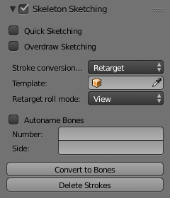
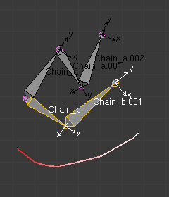
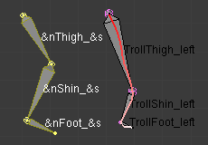
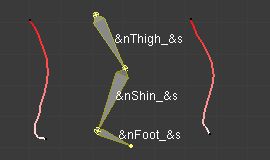

Converting to Bones¶
Once you have one or more selected strokes, you can convert them to bones, using either the Convert button of the Bone Sketching panel, or the corresponding gesture (see Gestures). Each selected stroke will generate a chain of bones, oriented from its reddest end to its whitest one. Note that converting a stroke does not delete it.
There are four different conversion methods with three "simple" ones, and one more advanced and complex, Template, that reuses bones from the same armature or from another one as a template for the strokes to convert, and which is detailed in the Templating section.
Anyway, remember that straight segments are always converted to one and only one bone (except for the Template conversion method), and that the future bones' joints are shown as green dots on selected free segments.
Remember also that the roll rotation of the created bones has been set during their "parent" stroke drawing (except for the Template conversion method) -- their Z axis will be aligned with the view Z axis of the active 3D View at draw-time.
Cố Định -- Fixed¶
With this method, each free segment of the selected strokes will be uniformly divided in n parts (set in Number number button), i.e. will give n bones.

The Fixed conversion preview on selected strokes. |

The Fixed conversion result. |
Tùy Ứng -- Adaptive¶
With this method, each free segment of the selected strokes will create as many bones as necessary to follow its shape closely enough. This "closely enough" parameter being set by the Threshold number button; higher values giving more bones, following more closely the segments' shape. So the more twisted a free segment, the more bones it will generate.

The Adaptive conversion preview on selected strokes. |

The Adaptive conversion result. |
Chiều Dài -- Length¶
With this method, each free segment of the selected strokes will create as many bones as necessary, so that none of them is longer than the Length number button value (in Blender Units).

The Length conversion preview on selected strokes. |

Using a larger length value. |

The Length conversion result. |
Đổi Mục Tiêu -- Retarget¶
Retarget template bone chain to stroke.
- Bản Mẫu -- Template
- Template armature that will be retargeted to the stroke. See Templating for more information.
- Chế độ xoay trong quá trình đổi mục tiêu -- Retarget roll mode
- Không Có -- None
- Do not adjust roll.
- Góc Nhìn -- View
- Roll bones to face the view.
- Khớp -- Joint
- Roll bone to original joint plane offset.
- Autoname
- Automatically generates values to replace &N and &S suffix placeholders in the template names.
- Số -- Number
- String to replace &N with (e.g. 'Finger.&N' can be set to 'Finger.1' or 'Finger.One').
- Bên -- Side
- String to replace &N with (e.g. 'Finger.&S' can be set to 'Finger.R' or 'Finger.Right').
Templating¶
The idea of templating is to use an already existing armature as base ("template") to create a new armature. It differs from a simple copy in that you can directly define the new armature different in some aspects than its reference rig.
In Blender, the only templating tool is the bone sketching one (Etch-a-ton, described in the previous page), with its Template conversion method, so you should have read its page before this one!
The Template conversion method of Bone Sketching tool maps a copy of existing bones to each selected stroke. The new bones will inherit some of their properties (influence, number of segments, etc.) from the corresponding bones in the template, but they will acquire their lengths, rolls and rotation from the sketch; so these properties would be different as compared to the template.
This is easier to understand with some examples.
In the following image, "armature.002" is set as the template, and the stroke maps with "chain_a" of this template. None of the bones are selected in the template. Note that there is no second stroke to map with chain "chain_b" of the template. The result is shown at right: Blender creates a copy of "chain_a" and matches the bones with the stroke.
Blender also creates a copy of "chain_b", but this chain is not altered in any way; because this tool can map only one selected chain with a stroke.
In the following example, no template is selected (in other words, all the action is within the armature itself).
Two bones are selected in "chain_b", and the property panel is set to map the joints with the stroke. So these two selected bones are copied and the newly created copy of the chain is matched with the stroke (note that, the newly created bones are named in continuation of the original chain).

Conversion settings. |

Before conversion. |

After conversion. |
If you had selected both the chains ("Chain_a" and "Chain_b"), you would have still got the same result as in the example above, because the tool maps to stroke only one selected chain.
In the following example also, only one chain is selected, but there are three strokes to map to. In this case, the same chain is copied three times (once for each stroke) and then mapped to individual strokes. Note how a two-bone chain is fitted to a three-segment stroke.

Before conversion. |
After conversion. |
OK now, here are some important ground rules:
- This conversion method can use as reference bones either the selected bones in the currently edited armature, or all bones from another armature. In general, it is a better idea to create new "templated" bones inside the "reference" armature, so you can precisely select which bones to use as template -- if you want the new bones in a different armature, you can then use the Separate Ctrl-Alt-P and optionally Join (Ctrl-J in Object Mode) tools...
- This tool only considers one chain of bones, so it is better to select only one chain of bones inside the current armature (or use a single-chain armature object as template). Else, the chain of the template containing the first created bones will be mapped to the selected strokes, and the other chains will just be "copied" as-is, without any modification.
- This tool maps the same chain of bones on all selected strokes, so you cannot use multiple strokes to map a multi-chains template -- you will rather get a whole set of new bones for each selected stroke!
- If you have strokes only made of straight segments, they must have at least as much segments as there are bones in the template chain (else, the newly created chain is not mapped at all to the stroke, and remains an exact duplicate of its template). If there are more segments than necessary, the conversion algorithm will chose the best "joints" for the bones to fit to the reference chain, using the same influence settings as for free segments (Angle, Length and Definition settings, see below).
- If you try to Convert without template bones
(i.e. either an empty armature selected as template, or no bones selected in the current edited armature),
you will get the error message
No Template and no deforming bones selected, and nothing will occur.
With current edited armature as template. |

With another armature as template. |
Now, here are the settings of this conversion method:
- No, View, Joint buttons
These three toggle buttons (mutually exclusive) control how the roll angle of newly created bones is affected:
- Không Có -- No
- Do not alter the bones roll (i.e. the new bones' rolls fit their reference ones).
- Góc Nhìn -- View
- Roll each bone so that one of its X, Y or Z local axis is aligned (as much as possible) with the current view's Z axis.
- Khớp -- Joint
- New bones roll fit their original rotation (as No option), but with regards to the bend of the joint with its parent.

With No roll option. |

With View roll option. |

With Joint roll option. |
The "Bone.003" to "Bone.005" chain is the mapped-to-stroke version of "Bone" to "Bone.002" selected one, and "Bone.001" has a modified roll angle.
- Bản Mẫu -- Template
- In this data ID you can select the armature to use as template. If you choose None, the selected bones from the currently edited armature will be used as reference, else all bones of the other armature will be used.
- Angle, Length, Definition are numeric fields.
These settings control how the template is mapped to the selected strokes. Each one can have a value between (0.0 and 10.0), the default being 1.0.
- Góc Độ -- Angle
- Controls the influence of the angle of the joints (i.e. angle between bones). The higher this value, the more the conversion process will try to preserve these joints angle in the new chain.
- Chiều Dài -- Length
- Controls the influence of the bones' length. The higher this value, the more the conversion process will try to preserve these lengths in the new bones.
- Definition
- Controls the influence of the stroke's shape. The higher this value, the more the conversion process will try to follow the stroke with the new chain.

Examples of Template conversions for various influence weights values, with one stroke quite similar to the template chain's shape, and one stroke very different.
- Side and Number text fields, auto button
- These control how the new bones are named. By default, they just take the same names as the original ones from the template, except for the final number, increased as needed. However, if the template bones have "&s" somewhere in their name, this "placeholder" will be replaced in the "templated" bones' name by the content of the Side text field. Similarly, a "&n" placeholder will be replaced by the Number field content. If you enable the small auto button, the Number field content is auto-generated, producing a number starting from nothing, and increased each time you press the Convert button, and the "&s" placeholder is replaced by the side of the bone (relative to the local X axis: "r" for negative X values, "l" for positive ones).

Conversion settings. |

Before conversion (note, the &n and &s placeholders in template bones' names). |

After conversion: the placeholders have been replaced by the content of the S and N text fields of the Bone Sketching panel. |
{kind=link}

Conversion settings. |

Before conversion (note that, in the Bone Sketching panel, the S and N fields are empty, and the small "auto" button is enabled). |
{kind=link}
{kind=link}
- Static text line
The line just above the Peel Objects button gives you two details:
- The n joints part gives you the number of joints (i.e. bones' joints, with connected joints considered as one joint), either from the selected bones of the edited armature, or in the whole other template armature.
- The second part is only present when another armature has been selected as template -- it gives you the root bone's name of the chain that will be mapped to the strokes. Or, while you are drawing a stroke with straight segments, the name of the bone corresponding to the current segment (and "Done" when you have enough segments for all bones in the template chain).